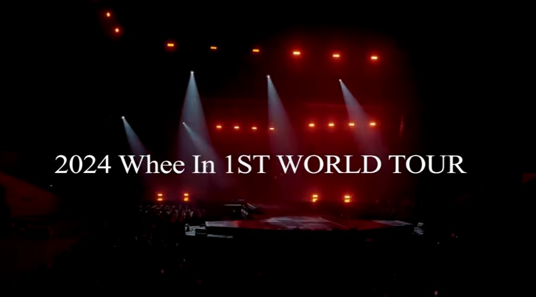
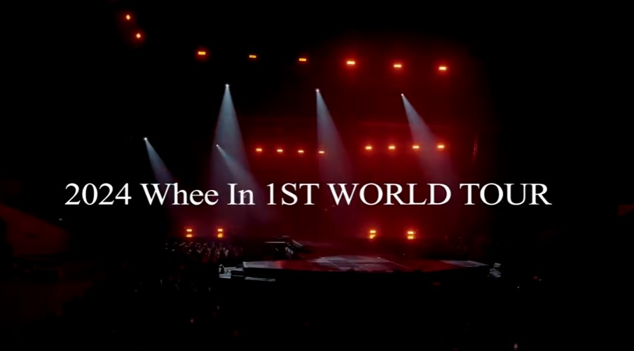

2024 1ST WORLD TOUR : WHEE IN THE MOOD [BEYOND] ENCORE X Sightseeing in Kaohsiung
Thank you, Moomoos! Wheein's encore concert in Kaohsiung on August 24th is SOLD OUT!! Tickets for August 25th are still available, so please come to Kaohsiung and enjoy Wheein's live performance while sightseeing!
If you have any questions about tourism or tickets, feel free to ask. TICKETING NOW!